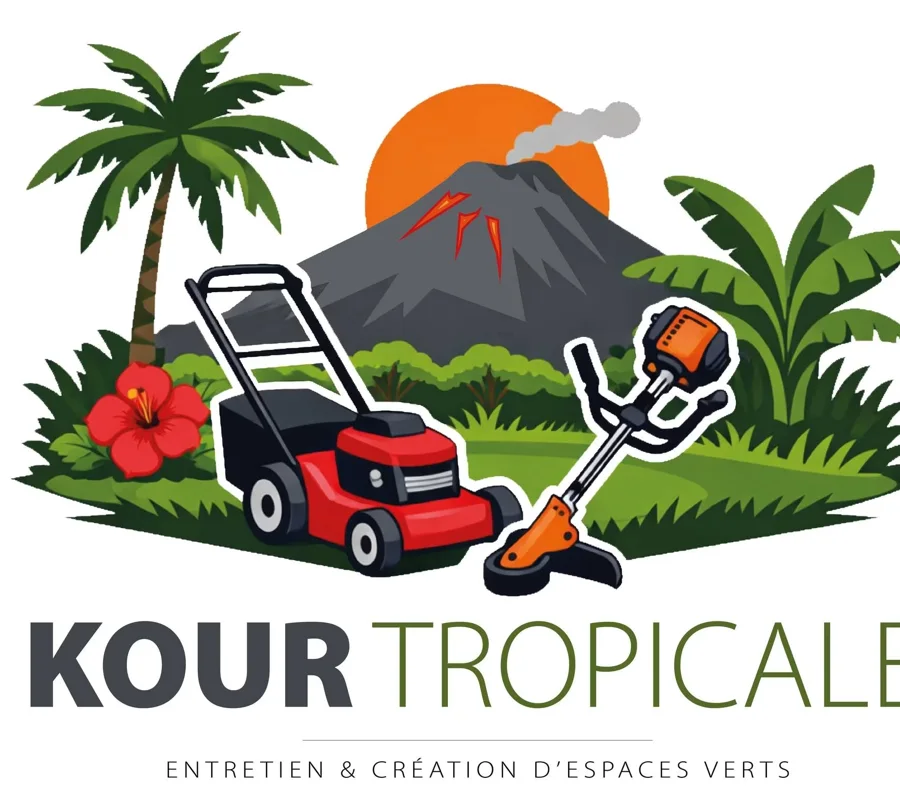
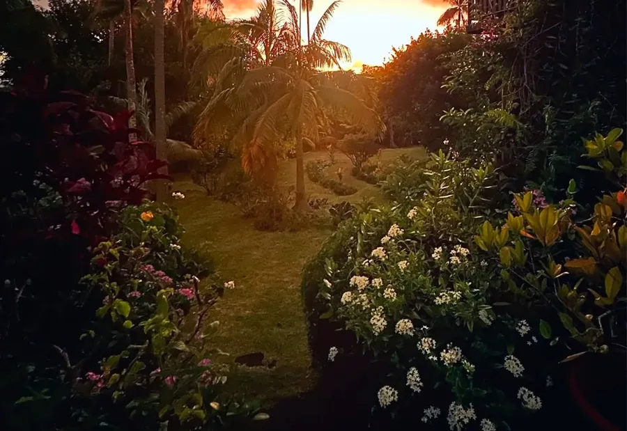

Débroussaillage
Terrains et parcelles dégagés, remis au propre et prêts à revivre.
Entretien & création d'espaces verts · Sainte‑Rose
Nous entretenons, aménageons et faisons vivre vos jardins et espaces verts à La Réunion.
Une nouvelle entreprise réunionnaise
« KOUR TROPICALE, c'est une nouvelle entreprise réunionnaise dédiée à l'entretien et à la valorisation des jardins et espaces verts. »
Annonce « KOUR TROPICALE est lancée », publiée sur la page le 13 avril 2026.
Installée au Piton Sainte-Rose, entre le volcan et l'océan, Kour Tropicale prend soin des jardins de l'Est avec une idée simple : des espaces verts nets, beaux et vivants, toute l'année.

Nos prestations
Terrains et parcelles dégagés, remis au propre et prêts à revivre.
Entretien courant, remise en état et travaux de jardinage à domicile.
Un regard de jardinier pour faire les bons choix pour votre terrain.
Création d'espaces verts, avec une belle place pour les espèces endémiques.
Pour qui
Votre kour entre de bonnes mains.
Des abords soignés qui donnent envie d'entrer.

Faire vivre les jardins
Pelouse nette, massifs fleuris, palmiers qui filent vers le ciel : voilà l'esprit Kour Tropicale. Un jardin entretenu avec soin, c'est un coin de paradis où l'on a envie de s'asseoir le soir, quand le soleil se couche sur Sainte-Rose.
Parler de mon jardinPour les fêtes
Les repas en famille se font dehors, sous la varangue ou au fond de la kour. Réservez dès maintenant votre passage avant les fêtes, ou offrez un coup de main au jardin à un proche : un cadeau qui fait plaisir longtemps.
Contact